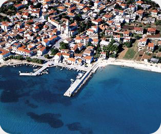
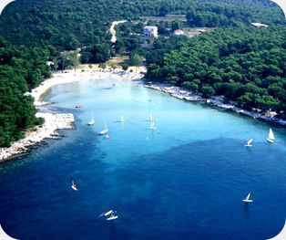

Pakoštane
Climate conditions in Pakoštane are typically Mediterranean: short winter periods, followed by long hot summers. Fortunately, by the coastline there's a wind called Maestral (Mistral) that helps to endure hot weather by bringing fresh air from the sea.
Sea temperatures are adequate for swimming during a long period from the end of May to the late October. Because of that, there are more and more people who take their vacation in preseason or postseason to avoid summer rush and yet enjoy swimming and all the other advantages of summer vacation.
More detailed data on climate conditions and sea temperature can be found on Croatian Meteorological and Hydrological Service web site:
Situated in the very center of the Adriatic coast and at the unique location between the sea and the lake called Vransko jezero, surrounded by natural beauties of national parks, by its appearance and the charm of a small Dalmatian place, Pakoštane can be a good reason for your arrival.
The immediate vicinity of the Zadar and Split airports enables a quick arrival to this area. Good connections with the European road network and regular ferry lines with Italy make Pakoštane an attractive destination.

In the comforts of the Mediterranean nature and the beauty of the Pakoštane Rivera, everybody can find his own piece of the summer paradise, children playing on the sand, adults in the shade of the pine wood, and those in love in hidden coves of neighboring islets.
Gourmets can enjoy in domestic specialties; cheese, smoked ham, lamb meat, and lovers of seafood in fresh fish, shells, scampi and good Dalmatian wines.
Pakoštane offers its guests an unforgettable experience of summer with memories of odours of the sea and the old pine wood.
Except for enjoying in the sea and in the sun, guests are offered active vacations in Pakoštane through a rich offer of sports and recreational contents in tourist settlements or through organizing of local sports competitions.
Special attractions are trips to surrounding national parks and nature parks.
Pakoštane summer evenings filled with sounds of music and songs, irresistible odours from restaurants and taverns, dazedness with good wines, satisfied faces and smiles, remain in permanent memory of guests. Many of them return each year.

Welcome!